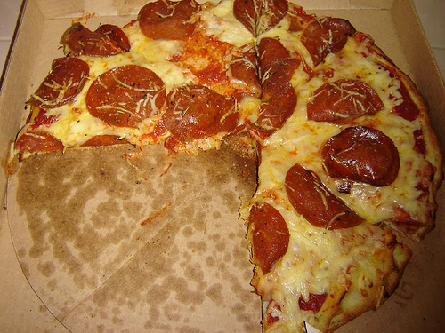
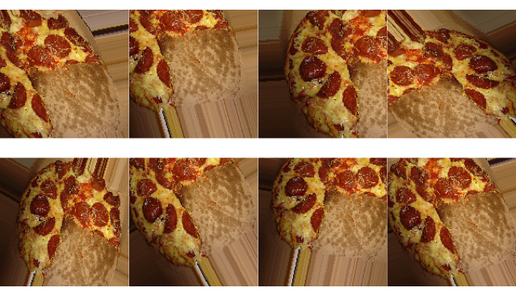
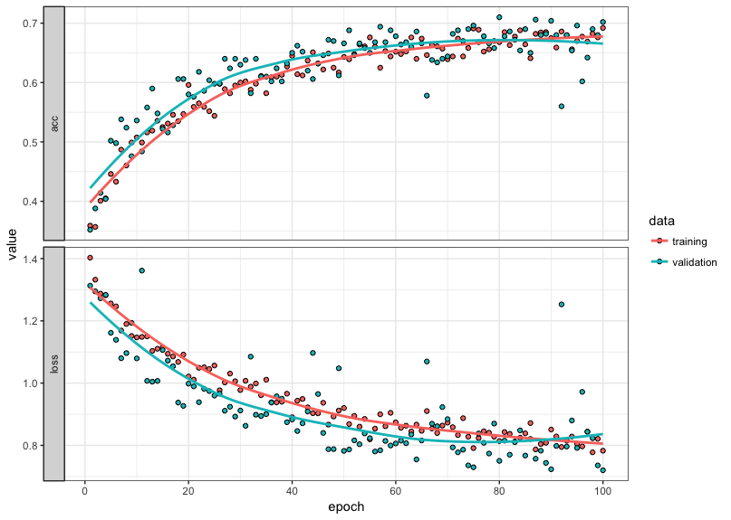

Overview
Convolutional Neural Networks (CNNs or Convnets) are of one the more interesting applications of Neural Networks today. For example, CNNs power the brains of self-driving cars and the face detection software on your iPhone. The steps required to build a CNN have been greatly simplified with the advent of Keras, a high-level framework for constructing Neural Nets that relies on Tensorflow for low-level computation. Recently, an API for R was enabled, yet there remains a lack of basic tutorials on how to leverage Keras with the R language.The goal of this post is to change that by showing you the end-to-end process of building an image classifier in R. As usual, we’ll cover the steps in the context of real-world example – automated image tagging.
Imagine you run a website, www.tastyfoodpics.net, dedicated to capturing the most scrumptious images of your favorite foods, which include tacos, pizza, hot dogs, and hamburgers. People upload pictures of these foods to your website, and you tag them with their respective labels. However, your user base is rapidly expanding and you want to automate the tagging process. You have a few thousand pictures of each food class and wonder if you can outsource the image classification process to your computer. Let’s find out below!
First, we’ll open up R-studio and load the libraries required to build our image classifier. You can install Keras directly from R with install_keras. You’ll also need to install tensorflow, which serves as the backend for Keras.
libs = c('RJSONIO', 'keras', 'ggplot2', 'dplyr', 'reshape')
lapply(libs, require, character.only = TRUE)
base_dir = dirname(rstudioapi::getSourceEditorContext()$path)
setwd(base_dir)Assuming the required libraries have been successfully loaded, the next step is to download the images we’ll need to train and validate our classifier. Luckily, there is a website – http://www.image-net.org/index – that has ~14 million tagged images of pretty much everything you can think of, including all of our tasty foods. The website allows you to search for an image and then provides a list of image URLs from around the web. For example, the two URLs for pizza each contain ~1500 links to images of cheese pizza and pepperoni pizza. We could add more links (and more pictures) to improve our classifier, but we’ll keep in simple with around a thousand images for each class. Once the URLs are specified, the final step is to write our the image_url_json list as a .json file, which will then be read into Python.
image_url_json = list(
'hot dog' = c('http://www.image-net.org/api/text/imagenet.synset.geturls?wnid=n07697537',
'http://www.image-net.org/api/text/imagenet.synset.geturls?wnid=n07690019'),
'hamburger' = c('http://www.image-net.org/api/text/imagenet.synset.geturls?wnid=n07697100',
'http://www.image-net.org/api/text/imagenet.synset.geturls?wnid=n07697313'),
'pizza' = c('http://www.image-net.org/api/text/imagenet.synset.geturls?wnid=n07874159',
'http://www.image-net.org/api/text/imagenet.synset.geturls?wnid=n07874259'),
'taco' = c('http://www.image-net.org/api/text/imagenet.synset.geturls?wnid=n07880751',
'http://www.image-net.org/api/text/imagenet.synset.geturls?wnid=n07880880')
)
json_img_fname = 'image_url.json'
write(toJSON(image_url_json), json_img_fname)The next code block downloads the images. I had some old Python code for image scraping, so I’ve adapted it here as retrieve_img.py. Just drop this script in the same directory as your R script. It will download and organize the images referenced in image_url.json.
import os
import urllib2
import sys
from bs4 import BeautifulSoup
import numpy as np
from PIL import Image
import json
def create_image_dir(words):
for w in words:
if not os.path.exists(w):
print("creating directory for {w} images".format(w = w))
os.mkdir(w)
def remove_blank_image(dir_loc, rm_pix_values):
for i in os.listdir(dir_loc):
tmp_img = os.path.join(dir_loc, i)
try:
img_array = np.asarray(Image.open(tmp_img).convert('RGB'))
img_total = sum(sum(img_array.sum(-1)))
if img_total == rm_pix_value:
os.remove(tmp_img)
except Exception as e:
print(str(e))
os.remove(tmp_img)
def check_for_new_words(image_dict):
base_dir = os.getcwd()
new_words = list(set(image_dict.keys()) - set(os.listdir(base_dir)))
final_image_dict = {}
for word, url in image_dict.items():
if word in new_words:
final_image_dict[word] = url
return(final_image_dict)
def download_images(word_url_dict):
for word, url in word_url_dict.items():
img_count = 1
for tmp_url in url:
opener = urllib2.build_opener()
opener.addheaders = [('User-Agent', 'Mozilla/5.0')]
image_urls = str(BeautifulSoup(opener.open(tmp_url),
'html.parser')).split("\r\n")
for i in image_urls:
try:
print("collecting image {n}".format(n = str(img_count)))
tmp_img = urllib2.urlopen(i, timeout = 2).read()
with open(os.path.join(word,
word + str(img_count) + ".jpg"), 'w') as f:
f.write(tmp_img)
img_count += 1
except Exception as e:
print(str(e))
print("all images for {word} collected".format(word = word))
print("removing non-images")
remove_blank_image(word, rm_pix_value)
if __name__ == '__main__':
with open(sys.argv[1]) as f:
image_dict = json.load(f)
# checks if any new words have been added to the list to avoid overwriting already downloaded images
image_dict = check_for_new_words(image_dict)
# creates directories based on the words in our dictionary (hot dog, hamburger, etc.)
create_image_dir(image_dict.keys())
# reads in the and sums up all of the pixcel values in our sample missing image
sample_remove_img = np.asarray(Image.open('sample_remove.jpg').convert('RGB'))
rm_pix_value = sum(sum(sample_remove_img.sum(-1)))
# downloads all of the images, stores each in their respective folder, and then removes missing or corrupted files
download_images(image_dict)Last, place the image below in the same directory as the retrieve_img.py and call it sample_remove.jpg.
When a URL returns a blank image, the image will be stored as the image above. Obviously, this isn’t a hot dog or hamburger, so we want to exclude it. All blank images are the same and thus have identical Red, Green, and Blue (RGB) values for each pixel. We can add up all RGB values to get a single value for the image. All images with this aggregated value are thus missing and will be removed following the download step.
We can execute the retrieve_img.py script from within R. This part will take about 20 minutes, which is the perfect amount of time for a spicy taco or pizza slice.
# my python version is located at "//anaconda/bin/python"
py = system("which python")
py_img_download_script = 'retrieve_img.py'
system(paste(py,
py_img_download_script,
json_img_fname
))There should now be four folders in our main directory, one for each food category. Let’s confirm the number of downloaded images.
for(category in names(image_url_json)){
print(paste0("There are ",
length(list.files(category)),
" images ",
category,
"s in this directory"
))
}## [1] "There are 1568 images of hot dogs in this directory"
## [1] "There are 1932 images of hamburgers in this directory"
## [1] "There are 2156 images of pizzas in this directory"
## [1] "There are 1273 images of tacos in this directory"The classes are reasonably well balanced and should provide enough images to get started. Next, we’ll segment our images out into training, validation, and testing. 60% will be allocated to training, while the remaining 40% will be split between validation and testing.
# create four seperate directories (one for each image) in train, validation, and test
for(label in names(image_url_json)){
dir.create(file.path(base_dir, 'train', label))
dir.create(file.path(base_dir, 'validation', label))
dir.create(file.path(base_dir, 'test', label))
}
# Proportion of allocated to training, validation, and testing
split_prop = c(0.6, 0.2, 0.2)
for(label in names(image_url_json)){
img_files = list.files(file.path(base_dir, label))
# training images
train_img_index = 1:floor(length(img_files) * split_prop[1])
train_img_files = img_files[train_img_index]
# validation images
val_img_index = max(train_img_index):(max(train_img_index) + floor(length(img_files) * split_prop[2]) + 1)
val_img_files = img_files[val_img_index]
# test images
test_img_index = (max(val_img_index) + 1):length(img_files)
test_img_files = img_files[test_img_index]
# move files to train directory
file.copy(file.path(base_dir, label, train_img_files),
file.path('train', label))
# move files to validation directory
file.copy(file.path(base_dir, label, val_img_files),
file.path('validation', label))
# move files to testing directory
file.copy(file.path(base_dir, label, test_img_files),
file.path('test', label))
}We are ready to get started on the modeling part. Let’s establish a path to the training directory and set up our augmented image_data_generator function. This function implements a few techniques that I’ll briefly describe below.
First, it scales the pixel values to be between zero and one. Normalizing data makes the training process more efficient, which in turn leads to more accurate classification. This happens because changes to weights within the network will have more of an impact on large values relative to small values.
Second, the function “augments” the training images. Image augmentation involves rotating, shifting, zooming, flipping or modifying certain aspects of an image. The goal is to artificially increase the number of training samples by ensuring that the model never encounters the same image during training. Each time a batch (or sample) of images is fed into the model, the images will be modified slightly and thus have different visual properties relative to previous or future batches. This leads to a model that is less prone to overfitting.
train_dir = file.path(base_dir, 'train')
train_datagen = image_data_generator(rescale = 1/255,
rotation_range = 40,
width_shift_range = 0.20,
height_shift_range = 0.20,
shear_range = 0.20,
zoom_range = 0.20,
horizontal_flip = TRUE
)The train_generator function feeds the images to our model. It generates random samples and then applies the transformations above to each image.
train_generator = flow_images_from_directory(
train_dir,
train_datagen,
target_size = c(150, 150),
batch_size = 25,
class_mode = "categorical"
)Let’s make the concept of image augmentation more concrete by bringing in an image and applying some of the transformations outlined above.

Cheesy. If you haven’t picked up your phone and dialed Pizza Hut at this point, you have more willpower than me. Anyways, the block below will make a series of random transformations to the same image.
# read in a single images of pizza
pizza = image_load(file.path('pizza', 'pizza7.jpg'),
target_size = c(150, 150)
)
# set up our generator to augment the image
pizza_gen = image_data_generator(rescale = 1/255,
rotation_range = 40,
width_shift_range = 0.25,
height_shift_range = 0.25,
shear_range = 0.25,
zoom_range = 0.25,
horizontal_flip = TRUE)
# convert the image into an array
pizza_array = image_to_array(pizza)
# specify the shape of the array
pizza_array = array_reshape(pizza_array, c(1, 150, 150, 3))
augmented_pizza_generator = flow_images_from_data(pizza_array,
generator = pizza_gen,
batch_size = 1)
pizza_plot = par(mfrow = c(2, 4),
pty = "s",
mar = c(0.5, 0, 0.5, 0)
)
for(i in 1:8){
pizza_pic = generator_next(augmented_pizza_generator)
plot(as.raster(pizza_pic[1,,,]))
}
plot(as.raster())
Note how each image is slightly different than the other images. This is what is referred to as the “augmentation” step and, as mentioned above, is an easy way to improve the overall performance of the model.
We’ll also set up a generator for our validation set. Note that we do not implement augmentation here because these are the images that we’ll initially measure our classification performance against.
validation_dir = file.path(base_dir, 'validation')
validation_datagen = image_data_generator(rescale = 1/255)
validation_generator = flow_images_from_directory(
validation_dir,
validation_datagen,
target_size = c(150, 150),
batch_size = 25,
class_mode = "categorical"
)We’ll specify our network architecture next.
model = keras_model_sequential() %>%
layer_conv_2d(filters = 8, kernel_size = c(3, 3), activation = "relu",
input_shape = c(150, 150, 3)) %>%
layer_max_pooling_2d(pool_size = c(2, 2)) %>%
layer_conv_2d(filters = 16, kernel_size = c(3, 3), activation = "relu") %>%
layer_max_pooling_2d(pool_size = c(2, 2)) %>%
layer_conv_2d(filters = 32, kernel_size = c(3, 3), activation = "relu") %>%
layer_max_pooling_2d(pool_size = c(2, 2)) %>%
layer_flatten() %>%
layer_dropout(rate = 0.25) %>%
layer_dense(units = 64, activation = "relu") %>%
layer_dense(units = length(names(image_url_json)), activation = "softmax")This is a simple setup compared to some of the other architectures commonly cited in this area. For example, our convolutional base (the part that extracts the image features) has the following setup.
# ____________________________________________________________________________
# Layer (type) Output Shape Param #
# ============================================================================
# conv2d_1 (Conv2D) (None, 148, 148, 8) 224
# ____________________________________________________________________________
# max_pooling2d_1 (MaxPooling2D) (None, 74, 74, 8) 0
# ____________________________________________________________________________
# conv2d_2 (Conv2D) (None, 72, 72, 16) 1168
# ____________________________________________________________________________
# max_pooling2d_2 (MaxPooling2D) (None, 36, 36, 16) 0
# ____________________________________________________________________________
# conv2d_3 (Conv2D) (None, 34, 34, 32) 4640
# ____________________________________________________________________________
# max_pooling2d_3 (MaxPooling2D) (None, 17, 17, 32) 0Compare this to the VGG19 - a deep CNN for large-scale image classification.
# ____________________________________________________________________________
# Layer (type) Output Shape Param #
# ============================================================================
# input_4 (InputLayer) (None, 150, 150, 3) 0
# ____________________________________________________________________________
# block1_conv1 (Conv2D) (None, 150, 150, 64) 1792
# ____________________________________________________________________________
# block1_conv2 (Conv2D) (None, 150, 150, 64) 36928
# ____________________________________________________________________________
# block1_pool (MaxPooling2D) (None, 75, 75, 64) 0
# ____________________________________________________________________________
# block2_conv1 (Conv2D) (None, 75, 75, 128) 73856
# ____________________________________________________________________________
# block2_conv2 (Conv2D) (None, 75, 75, 128) 147584
# ____________________________________________________________________________
# block2_pool (MaxPooling2D) (None, 37, 37, 128) 0
# ____________________________________________________________________________
# block3_conv1 (Conv2D) (None, 37, 37, 256) 295168
# ____________________________________________________________________________
# block3_conv2 (Conv2D) (None, 37, 37, 256) 590080
# ____________________________________________________________________________
# block3_conv3 (Conv2D) (None, 37, 37, 256) 590080
# ____________________________________________________________________________
# block3_conv4 (Conv2D) (None, 37, 37, 256) 590080
# ____________________________________________________________________________
# block3_pool (MaxPooling2D) (None, 18, 18, 256) 0
# ____________________________________________________________________________
# block4_conv1 (Conv2D) (None, 18, 18, 512) 1180160
# ____________________________________________________________________________
# block4_conv2 (Conv2D) (None, 18, 18, 512) 2359808
# ____________________________________________________________________________
# block4_conv3 (Conv2D) (None, 18, 18, 512) 2359808
# ____________________________________________________________________________
# block4_conv4 (Conv2D) (None, 18, 18, 512) 2359808
# ____________________________________________________________________________
# block4_pool (MaxPooling2D) (None, 9, 9, 512) 0
# ____________________________________________________________________________
# block5_conv1 (Conv2D) (None, 9, 9, 512) 2359808
# ____________________________________________________________________________
# block5_conv2 (Conv2D) (None, 9, 9, 512) 2359808
# ____________________________________________________________________________
# block5_conv3 (Conv2D) (None, 9, 9, 512) 2359808
# ____________________________________________________________________________
# block5_conv4 (Conv2D) (None, 9, 9, 512) 2359808
# ____________________________________________________________________________
# block5_pool (MaxPooling2D) (None, 4, 4, 512) 0The goal is for the model to run in under 30 minutes without the need of a Graphical Processing Unit (GPU). It would take a long time to train with a CPU if we attempted to implement a structure of this complexity. Adding more convolutions (layer_conv_2d) might improve model performance, but it would also greatly increase runtime. This tutorial was run on a CPU, which greatly limits the complexity of the classification model. Indeed, a GPU is crucial for any large-scale image classification problems.
Next, let’s compile, fit, and validate the model. Note the early_stopping parameter. This prevents the model from continuing to train once classification accuracy stops increasing on the validation set, indicating that our model is overfitting. If the validation accuracy doesn’t improve after 20 epochs, the model will stop training (otherwise it will go for the full 100 epochs). An epoch is a single run through all of the training data. After each epoch, we get an update on how the model is performing.
model %>% compile(
loss = "categorical_crossentropy",
optimizer = optimizer_rmsprop(lr = 1e-3),
metrics = c("acc")
)
early_stopping = callback_early_stopping(monitor = 'val_accuracy', patience = 20)
history = model %>% fit_generator(
train_generator,
steps_per_epoch = 50,
epochs = 100,
validation_data = validation_generator,
validation_steps = 25,
callbacks = c(early_stopping)
)Let’s plot out the loss and accuracy metrics for our classifier.
plot(history) +
theme_bw()
The model trained for the full 100 epochs. This indicates that we could potentially increase the total number and improve the quality of our model. However, around epoch 95 the training and validation performance begin to diverge. Once the slope of our validation metric flattens (or becomes negative), we should stop training our model, as this indicates overfitting. Thus, we might be able to eek out a bit of improvement beyond 100 epochs, but the overall improvement would be marginal beyond what we achieved with the initial 100 epoch run through.
Our final step is to assess how the model generalizes to unseen data (our test set).
test_dir = file.path(base_dir, 'test')
test_datagen <- image_data_generator(rescale = 1/255)
test_generator = flow_images_from_directory(test_dir,
test_datagen,
target_size = c(150, 150),
batch_size = 20,
class_mode = "categorical")
# assess accuracy on the test set
model %>% evaluate_generator(test_generator, steps = 50)## $loss
## [1] 0.6804143
##
## $acc
## [1] 0.729The model has a 73% classification accuracy, which is considerably better than chance. However, there are a number of steps we could make to greatly improve the performance accuracy, including (1) downloading more images, (2) fine-tuning the parameters in our network, or (3) using a pre-trained CNN. I’ll leave that up to you to try out some of these methods, and I’d love to hear about the results!